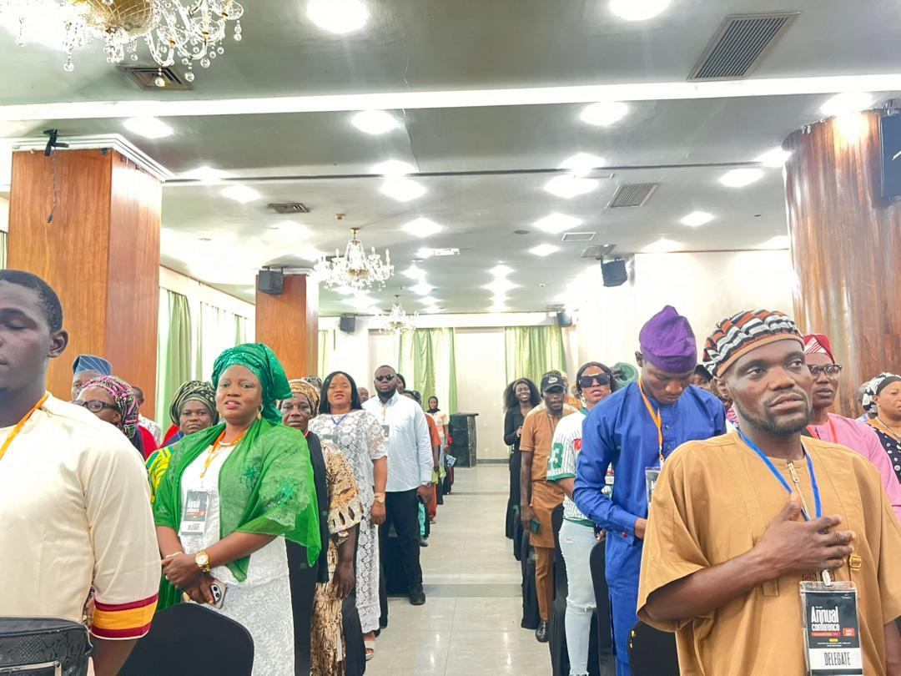

Political structure building & management
- Grassroots structure development
- Political structure coordination
- Local structure creation and alignment
- Secretariat setup and management
- Systematic structure administration
Political consulting · Media · Leadership
We help political leaders, aspirants, organisations and grassroots structures build influence with clarity, systems and strategic direction — the machinery that keeps working after the campaign ends.
StructureStrategyMediaCrisisMobilisation
Why you need a consultant
Most people misread the work. They see the noise and assume that is the profession. The profession is quieter, harder, and far more deliberate than that.
What people think it is
What the work actually is
Build structures that holdSustainable political structures with clear lines of responsibility from the polling unit upward.
Manage people and expectationReward alignment, loyalty management, and the discipline to say no without losing the room.
Guard the insideInternal sabotage and sycophancy cost more elections than the opposition does.
Leave something behindA legacy that survives the cycle, the party, and the office.
Our philosophy
We help leaders think strategically, build systems that scale, and align power with vision and values — because leadership without systems eventually collapses.
Our services
Each engagement is scoped to where you are — first-time aspirant, sitting officeholder, party structure, or organisation — and delivered confidentially.
Political leadership training
Delivered as closed-door sessions for a leader and their team, or as structured programmes for organisations and party formations.
Why choose us
Advice grounded in how power actually moves here — wards, delegates, party structures and community expectation.
Direct counsel behind closed doors. What is discussed with us stays with us.
One team holding all three, so your message, your machinery and your plan never contradict each other.
Decisions built on figures, mapping and analysis rather than sentiment or rumour.
Power aligned to a stated vision and defensible values, not to whoever shouts loudest.
We develop leadership that outlives a single election cycle.
Think of it like event planning
You hire a planner for a major event — not because you are incapable, but because complexity requires coordination.
A political consultant does the same work, at a far higher stake. We make leadership easier, smarter and more sustainable.
The firm
Our work runs from the conference hall to the polling unit — advising principals on strategy and media while building and holding the structures that carry them.

What we build
Delegates, ward leaders, community stakeholders — turnout is a systems outcome, not a stroke of luck.
Book a consultation
Tell us where you are and what you are trying to achieve. Our team will come back to you to arrange a private session.
Your request opens in your email app addressed to our office.
Everything you share is treated as confidential.
Leadership deserves intention
Not with noise. Not with chaos. Not with confusion. Build leadership that outlives elections.